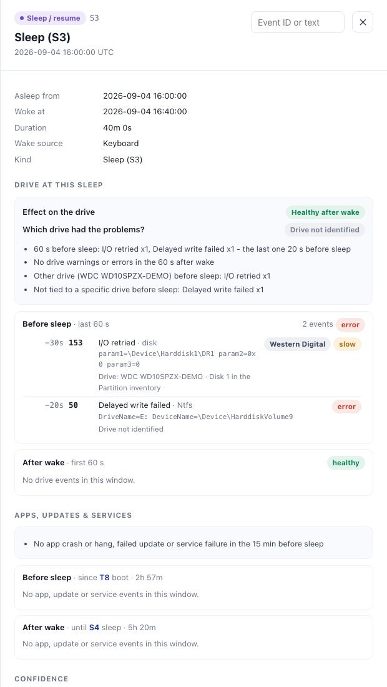
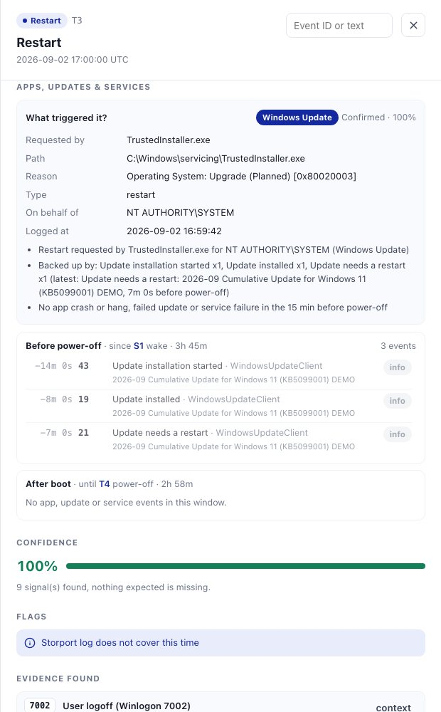
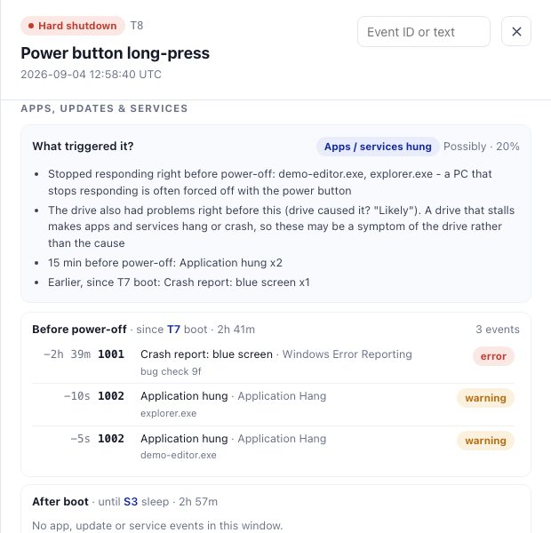
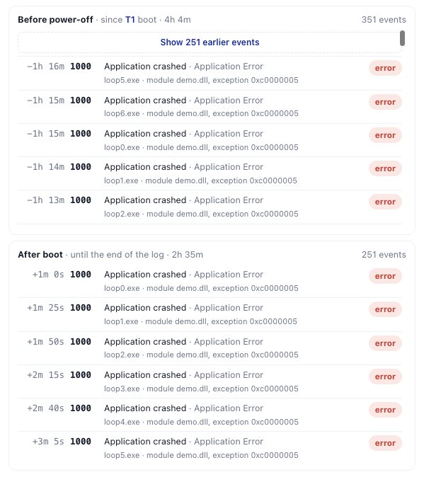
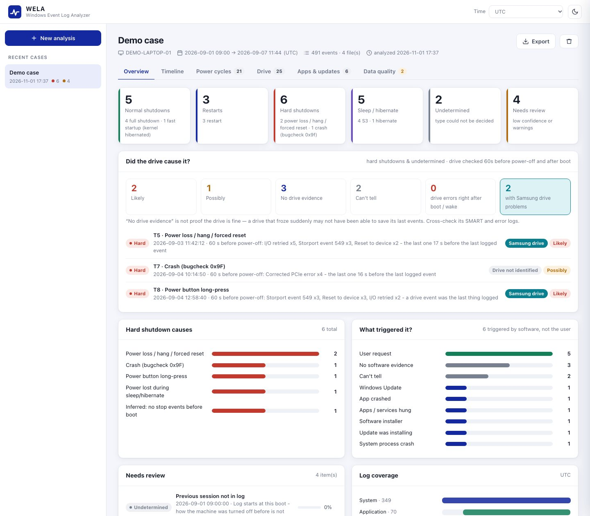
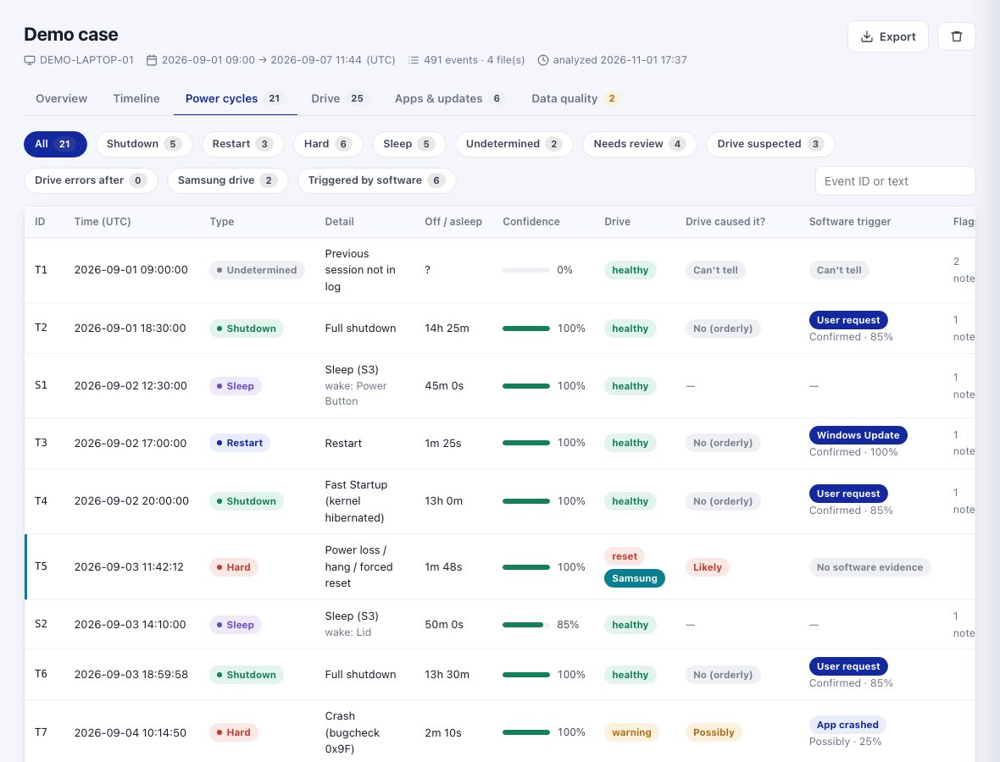
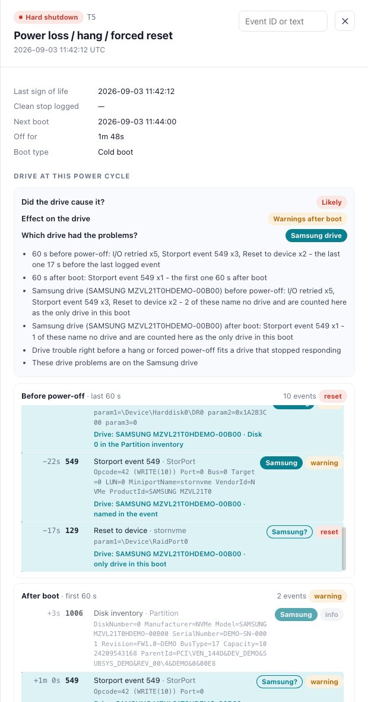
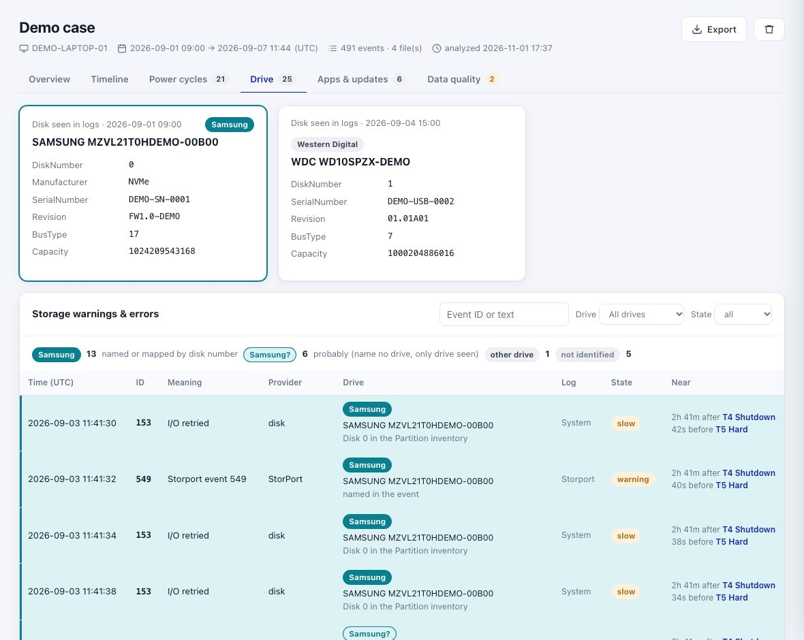
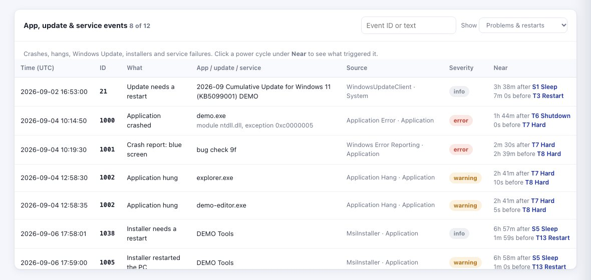
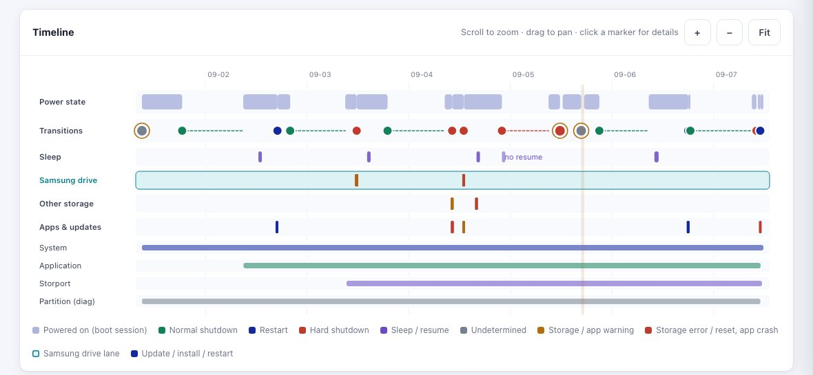

How every verdict is made — power cycles, the drive's part in them, whether that drive is a Samsung drive,
and which app, update or user triggered them — with the reasons behind each design decision, the demo script,
the limitations, the roadmap and where AI fits in.
Question 1How did each power cycle end?
Question 2Did the drive cause it?
Question 3Which drive — is it the Samsung drive?
Question 4What triggered it — an app, an update, the user?
Version 0.1.0Branch samsung-drive-and-app-triggers1 November 2026Prepared by Hitesh Kumar
How to read this. Each chapter opens with a one-line takeaway (blue bar).
Tables hold the exact rules — every number in them comes from wela/catalog.py and wela/engine.py as committed on this branch.
Chapter 17 is the demo script for the meeting; chapter 16 lists the caveats to state up front.
1At a glance
WELA turns a claim's Windows event logs into a verified, explainable story of every power cycle — in seconds, on the engineer's own PC.
The 30-second pitch. Customers return SSDs after crashes, freezes and sudden power-offs. The PC's own Windows event logs
hold the evidence, but they are thousands of events spread over several logs. WELA reads them and, in seconds, rebuilds every power cycle;
shows whether the drive was misbehaving right before it; whether that drive was the Samsung drive; and whether an app, an update or the user
triggered it. Every verdict comes with the events behind it and a confidence score, and anything uncertain is flagged for review.
The four questions WELA answers
Question
What WELA reports
Built from
1 · How did it end?
Normal shutdown · restart · Fast Startup · hard shutdown (crash, power-button long-press, power lost while asleep, hang during shutdown, power loss) · sleep / hibernate / Modern Standby · undetermined
Nothing is a black box: each verdict shows the evidence, the missing evidence, plain-language reasons and a confidence score. Rules live in one readable file.
Conservative
WELA says "undetermined", "can't tell" or "not identified" instead of guessing. A quiet log is never presented as proof the drive is fine.
Private
Runs on the engineer's PC; the web server binds to 127.0.0.1; no cloud, no telemetry.
Zero-install
Standard-library Python 3.9+; no packages needed on Windows. Works offline.
Tunable
Every event ID, weight, threshold and vendor rule is in catalog.py and can be overridden with a JSON file — no engine changes.
Robust
Unreadable files, missing logs, record gaps, clock changes and malformed events are reported, not fatal.
2Why WELA exists
Claim analysis needs the same evidence-based answer every time — reading Event Viewer by hand is slow, inconsistent and easy to get wrong.
The problem
When an SSD comes back under claim, the key questions are about power cycles: did the PC shut down cleanly, crash, or lose power?
Was the drive already failing before (the drive caused it) or did the problem start after (the event affected the drive)?
Was it even our drive — or another disk, a USB stick, the platform? Or was the restart simply Windows Update?
All of that is in the Windows event logs, but:
Volume — a claim's logs hold tens of thousands of events across System, Application, Storport and Partition logs.
Scattered evidence — one hard shutdown leaves traces in three logs (e.g. Storport warnings, disk retries, then Kernel-Power 41 and EventLog 6008 after the next boot).
Missing evidence matters — the absence of a stop event (no 1074/13/6006) is itself evidence, and so are lost or cleared records. Humans rarely check this systematically.
Inconsistency — two engineers reading the same logs can reach different conclusions; manual review of one claim can take hours.
Attribution — a "Reset to device" event does not say which drive; mapping it to the Samsung drive needs the disk inventory and care.
The approach
Automate the reading. Merge every log into one UTC timeline, find every boot, and decide how the previous session ended — using redundant evidence and timing, not one event.
Correlate around each power cycle. Look at the drive in the minute before power-off and after boot, and at every app and update event from the power cycle before to the one after.
Attribute carefully. Tie each storage event to a physical drive and say how that link was made — named, mapped, probable or unknown.
Show the work. Confidence scores, missing-evidence lists and review flags make uncertainty visible instead of hiding it.
It complements, not replaces, the drive's own SMART and error logs: a quiet Windows log never clears the drive (chapter 8).
3Architecture
A small, single-language codebase: a parser, a rule catalog, an analysis engine, and three ways to see the result (web UI, reports, command line).
Components
File
Responsibility
Lines
wela/parser.py
Reads .evtx (wevtutil, then PowerShell, then the optional python-evtx package on non-Windows) and XML exports into one normalised event record: UTC time, log, provider, event ID, record ID, level, data fields. From a folder it picks only System, Application and Storport (Operational, Health).
236
wela/catalog.py
The knowledge base: every power signal, storage and software event ID, evidence weight, threshold, crash code, vendor rule and shutdown-initiator pattern.
282
wela/engine.py
The analysis pipeline (chapter 5): from timeline to verdicts, confidence, drive identity, software trigger and the app / update lists.
1,470
wela/report.py
Self-contained HTML report, Excel workbook written directly as Office Open XML (no library), CSV and JSON.
406
wela/server.py
Local HTTP server and JSON API; native file / folder picker.
232
wela/store.py
Saves each case under ./cases/<id> (result JSON + compressed events for the "context" viewer).
84
wela/demo.py
Synthetic demo logs covering every tricky scenario, with the expected answers the tests check.
312
web/ (app.js, app.css, index.html)
The UI — vanilla JavaScript and CSS, no frameworks or CDN, works offline; light and dark themes.
1,173
tests/test_engine.py
51 automated tests (chapter 14).
535
Technology choices — and why
Choice
Reason
Python standard library only
Nothing to install on locked-down Windows PCs; simpler IT approval; one language for parser, engine, server and reports.
Windows' own wevtutil
Microsoft's reader for .evtx — exact field names and values, no third-party parser. PowerShell and python-evtx are fallbacks.
Local web UI on 127.0.0.1
A modern browser interface without deploying a server; claim data never leaves the PC.
Rules in a catalog, not in code
Reviewers can audit and tune event IDs, weights and thresholds; a JSON override changes behaviour without a code change.
Deterministic rules, not a model
Claim decisions must be reproducible and auditable: the same logs always give the same verdict, with the evidence shown. (AI is proposed on top, chapter 19.)
Excel written directly
Office Open XML is a zip of XML files; writing it directly avoids an external dependency while still giving frozen headers, filters and highlighted rows.
Local API (used by the UI)
GET /api/cases · GET /api/cases/<id> · GET /api/cases/<id>/events?around=<idx>&n=20 · GET /api/cases/<id>/events?tag=software&from=…&to=… (a whole app / update list) · GET /api/cases/<id>/export.(html|xlsx|csv|json)?tz=330 ·
POST /api/analyze · POST /api/demo · POST /api/pick · DELETE /api/cases/<id> · GET /api/config
4Inputs: the logs
System is required; Application and Storport make the drive and software answers strong. From a folder WELA reads only these — the Partition log, which ties disk events to a drive, is added as a file.
Log
Collect with (admin command prompt)
What WELA uses it for
Needed?
System
wevtutil epl System System.evtx
Boots and shutdowns (12/13, 6005/6006/6008, 41, 109, 1074), sleep, disk / stornvme / NTFS / volmgr / WHEA events, Windows Update, service failures, display driver timeouts
Required
Application
wevtutil epl Application Application.evtx
App crashes and hangs, Windows Error Reporting (incl. blue-screen reports), MSI installer events
Disk inventory at every boot (model, firmware, serial, disk number, bus type) — maps \Device\HarddiskN to a drive
Optional
add as a file
Setup
wevtutil epl Setup Setup.evtx
Windows servicing "a restart is needed" events
Optional
add as a file
Give WELA a folder (searched recursively) or individual files; .evtx and .xml both work, and files can be mixed.
From a folder only System, Application and Storport (Operational, Health) are read, so a copy of C:\Windows\System32\winevt\Logs with hundreds of logs works as it is. Files are recognised by name — as winevt\Logs names them (Microsoft-Windows-Storage-Storport%4Health.evtx) or as exported (Storport.evtx, PC01_System.evtx); the rest are skipped and counted. A file added by itself is always read.
All events are merged into one timeline in UTC; the UI and reports convert to the chosen time zone (UTC, IST, local, US, CET, China, Korea).
A file that cannot be read is listed under Data quality with the reason; the rest of the analysis continues.
Missing logs are reported ("Missing: Storport log — related checks are limited") and the affected verdicts say so.
Collect early. Operational and diagnostic logs such as Storport and Partition can be small and roll over; ask for the logs as soon as possible after the incident, and before any reinstall.
5The analysis pipeline
Twelve deterministic steps; each one only adds information, so every verdict can be traced back to the events it used.
#
Step
What happens
Why
1
Parse & merge
Every event becomes one record (UTC time, log, provider, ID, record ID, level, data). All logs are sorted into one timeline; from a folder only the four logs of chapter 4 are read.
Evidence for one power cycle sits in several logs.
2
Tag
Each event gets up to three meanings from the catalog: a power signal (e.g. "OS started"), a storage meaning (e.g. "Reset to device", state reset), a software meaning (e.g. "Application hung").
Rules work on meanings, not raw IDs; the catalog is the single place to change them.
3
Integrity
Coverage of each log, gaps in record IDs, cleared logs, time going backwards.
Missing records can hide the stop events — verdicts near gaps must be weaker.
4
Boots
Kernel-General 12, EventLog 6005/6009 and Kernel-Boot 27 within 3 minutes count as one boot. BootType=2 is a hibernate resume, not a boot.
Redundant markers: a boot is found even if one marker is missing.
5
Sessions
Everything between two boots is one boot session.
Each boot closes the previous session — that ending is what we classify.
6
Which drive
Each storage event is tied to a physical drive (chapter 9).
"Reset to device" is only meaningful if we know whose device.
7
Sleep
Sleep, hibernate and Modern Standby episodes rebuilt from 42 / 107 / Power-Troubleshooter 1 / 506 / 507 / 27.
Any one of them is enough to rebuild an episode.
8
Classify
For every boot: how did the previous session end, with a confidence score (chapters 6–7).
The core answer to question 1.
9
Correlate
Drive window: 60 s before the last logged event and 60 s after boot. App / update lists: from the power cycle before to this one, and from this one to the next; the trigger verdict reads the 15 min before and the 10 min after.
Cause shows before power-off; effect after boot; a slow cause can start long before.
10
Assess
Did the drive cause it? Effect on the drive. Which drive had the problems. What triggered it (software).
Questions 2, 3 and 4.
11
Data quality
Big clock changes, long unexplained quiet gaps inside a session.
Context for reviewers (chapter 11).
12
Result
Counts, power-cycle list, storage and software event lists, disk inventory, integrity report — saved as one JSON per case.
Feeds UI, reports, CLI and, later, AI.
Anatomy of one power cycle — the windows WELA looks at
Why "last sign of life"? After a hard shutdown there is no shutdown event to anchor on, so WELA uses the last event any log
recorded before the next boot. "−17 s" next to a drive event means it was logged 17 seconds before that point.
6How a power cycle is classified
For every boot, WELA asks: did the previous session stop cleanly, did Windows report an unclean stop, or is the evidence missing?
Evidence
Verdict
1074 / 109 / 13 / 6006 in the last 30 min of the session
Clean stop → restart (1074 says restart, or the next boot follows within 5 min) or shutdown
Kernel-Boot 27 with BootType = 1 on the next boot
The shutdown was Fast Startup (kernel hibernated)
Kernel-Power 41 and/or EventLog 6008 after the boot (+ 1001)
Hard shutdown — subtype from the 41 fields below
Stop started (1074) but then 41
Shutdown hung and did not complete
No stop events, no 41 / 6008
Inferred hard shutdown — low confidence, flagged for review
Record gap at the boundary, or the log starts at this boot
Undetermined — not guessed
Hard-shutdown subtype (Kernel-Power 41 fields)
Field
Subtype
BugcheckCode ≠ 0 (or WER 1001)
Crash (bugcheck 0x…)
PowerButtonTimestamp ≠ 0
Power-button long-press
SleepInProgress ≠ 0, or an open sleep
Power lost during sleep / hibernate
Stop events but 41
Shutdown started but did not complete (hang)
None of the above
Power loss / hang / forced reset
Restart or shutdown?
1074's shutdown type (parameter 5) — matched in many languages: English, German, French, Spanish, Italian, Dutch, Japanese, Chinese, Korean, Russian.
Next boot is a Fast Startup boot → shutdown.
Otherwise: stop → boot gap under 5 min → restart (flagged as "inferred from gap").
1074 says restart but the boot came > 30 min later → warning.
Sleep, hibernate, Modern Standby
Kernel-Power 42 (enter, TargetState 5 = hibernate) → 107 (resume) → Power-Troubleshooter 1 (carries sleep and wake time, plus wake source). Any one is enough to rebuild the episode. Modern Standby uses 506/507; hibernate resume uses Kernel-Boot 27 BootType = 2. A sleep with no resume followed by a fresh boot means power was lost while asleep.
Conflicts are flagged, not hidden. A clean stop (13 + 6006) followed by "unclean shutdown" on the next boot loses confidence and raises a
"check manually" warning; so do restarts that took far longer than a restart should.
7Confidence scoring
Confidence = the sum of the weights of the evidence found (capped at 100 %), minus penalties for conflicts and log gaps. Below 60 %, or any warning, means "Needs review".
Clean-stop evidence
Weight
Shutdown requested (User32 1074)
0.35
OS stopped (Kernel-General 13)
0.30
Event log stopped (6006)
0.30
Kernel shutdown initiated (Kernel-Power 109)
0.20
User logoff (Winlogon 7002)
0.05
1074 states the type (restart / power off)
+0.10
Hard-shutdown evidence & penalties
Weight
Unclean shutdown reported (Kernel-Power 41)
0.50
Previous shutdown unexpected (6008)
0.40
Bugcheck report (1001)
0.20
Session ended with no stop signal at all
0.30
Conflict: clean stop logged, yet unclean on boot
−0.25
Record gap at this boundary
−0.30
Worked examples (from the demo case)
ID
Situation
Calculation
Result
T2
Normal shutdown
1074 0.35 + 13 0.30 + 6006 0.30 + 109 0.20 + 7002 0.05 = 1.20, capped at 1.0; + 0.10 for the stated type → capped again
100 %
T13
Restart, no 1074
13 0.30 + 6006 0.30 + 109 0.20 + 7002 0.05 = 0.85; restart inferred from a 1-min gap (info flag)
85 %
T5
Hard shutdown, power loss
41 0.50 + 6008 0.40 + no stop signal 0.30 = 1.20 → capped
100 %
T10
Session just ends, nothing logged
no stop signal 0.30 only — "Inferred" + warning
30 % · review
T11
37 System records missing at the boundary
Undetermined, fixed 0.20 — the stop events may be in the gap
20 % · review
Sleep episodes score by how many of the three sleep signals (42 / 107 / Power-Troubleshooter 1, or 27 for hibernate) were found:
none 30 %, one 60 %, two 85 %, all 100 %; Modern Standby 90 % with both 506 and 507, else 50 %; a sleep that never resumed is capped at 50 %.
Three separate confidence measures. The percentage on a power cycle is about how it ended.
"What triggered it?" has its own percentage (chapter 10). Drive verdicts use labelled levels (Likely / Possibly / No drive evidence / Can't tell) and drive attribution uses
sure vs. probable (chapter 9) — each answers a different question, so they are kept apart.
8Did the drive cause it?
Drive trouble in the minute before power-off points at the drive as a cause; trouble in the minute after boot shows the effect on the drive.
What is checked
Every storage event — every Storport event at every level, plus disk, stornvme / storahci / Intel RST resets, NTFS, volmgr and WHEA — in
the 60 s before the last logged event and the 60 s after boot (for sleeps: before sleep entry and after wake). Each is listed with its offset and key fields; SCSI opcodes
are decoded (e.g. Opcode=42 (WRITE(10))). Informational events are listed but do not change the verdict.
Drive state (worst first)
Example events
missing
disk 157 — disk surprise-removed
reset
stornvme / storahci 129 — reset to device
error
disk 7, 11, 51, 52, 154; NTFS 50/55/98/140; WHEA 18
slow
disk 153 — I/O retried
warning
Storport warnings; WHEA 17/19/47 corrected errors
Crash code
Meaning
Points at storage
0x7A · 0x77
Kernel data / stack in-page error
strongly
0x7B · 0xED
Inaccessible boot device / unmountable volume
strongly
0xF4
Critical object termination
strongly
0x24 · 0x9F · 0xEF
NTFS · driver power state · critical process died
sometimes
0x133 · 0x154
DPC watchdog · unexpected store exception
sometimes
The verdict (hard shutdowns and undetermined power cycles)
Verdict
Rule
Likely
A drive reset, error or surprise removal in the 60 s before power-off, or a crash code that strongly points at storage.
Possibly
Slow I/O or warnings before power-off; platform (WHEA) errors only — they may come from another device; or a crash code that is sometimes caused by storage.
No drive evidence
A log covers the window and the drive was quiet.
Can't tell
No log covers the window.
No (orderly)
Clean shutdowns and restarts — the drive did not cause them; drive errors during the shutdown are still listed ("check for failed writes or flushes").
For an undetermined power cycle the verdict is weakened one step (Likely → Possibly, No drive evidence → Can't tell).
Effect on the drive reads the 60 s after boot / wake: drive missing · errors · warnings · healthy · no data.
Drive trouble right before a hang or a power-button long-press gets an extra note: it fits a drive that stopped responding.
"No drive evidence" is not proof the drive is fine. Windows keeps its logs on the system drive. If that drive froze suddenly, its last
events may never have been written. The app says this next to every such verdict, and recommends checking the drive's own SMART and error logs.
9Which drive? Samsung identification
Every storage event is tied to a physical drive — and the app always says how it knows. Samsung's drive problems get their own teal colour everywhere.
Basis
How
Shown as
Named in the event
The event itself names the drive: Storport VendorId / ProductId / SerialNumber, Partition Model, a PCI ID such as VEN_144D (Samsung) in a WHEA event, or a Samsung part number such as MZVL2512HCJQ.
Samsung solid
Disk number
The event names \Device\HarddiskN; the Partition/Diagnostic 1006 inventory of that same boot says which drive was disk N. Disk numbers can change between boots (a USB drive plugged in, a second disk), so the boot matters.
Samsung solid
Only drive
The event names no drive (e.g. stornvme 129 on \Device\RaidPort0), but only one drive is in that boot — from the boot-time inventory, or else in the whole log set — and the event does not point at a different disk number.
Samsung? outlined = probably
Not identified
Two or more drives and nothing names one; or a WHEA event naming e.g. an Intel root port.
no badge
Making the match reliable
Situation
How WELA handles it
How Samsung is recognised
"Samsung" anywhere in the event · PCI vendor ID 144D in a device path · a Samsung MZ… part number in a model field (OEM drives such as MZVL2512HCJQ-00B00).
Storport cuts the name at 16 characters
SAMSUNG MZVL2512 (Storport) and SAMSUNG MZVL2512HCJQ-00B00 (Partition) are recognised as one drive by prefix.
Serial in different formats
Case and punctuation are ignored; one log reporting the NVMe EUI-64 (0025_3881_…) and the other the real serial still merge when the models match.
Two identical drives
Different serials keep them apart.
USB stick or second disk
Its errors are tied to it by disk number ("Other drive (WDC …)"); with two drives in the boot, unnamed events are not guessed.
No Partition log
It is not read from a folder — add it as a file to map disk numbers. Without it, drives named by Storport are still known; unnamed events are guessed only for Disk 0 and only when one drive is known — and labelled "probably".
Intel / AMD PCI IDs
Deliberately not used: they also name the CPU's own PCIe root ports.
Other vendors
Western Digital/SanDisk, SK hynix, Kioxia/Toshiba, Micron/Crucial, Intel/Solidigm, Seagate, Kingston, Phison, Silicon Motion, ADATA, Lite-On/SSSTC are named so their errors read as "another drive".
Per power cycle: which drive had the problems?
Samsung drive — at least one warning/error is surely on it · Probably the Samsung drive — only by "only drive" ·
Another drive · Drive not identified · No drive problems. When the drive is suspected, the reasons spell it out, e.g.
"These drive problems are on the Samsung drive" or "…on another drive, not the Samsung drive", with a breakdown per drive.
Where the highlight appears
Detail drawer: teal rows and a badge on each event, plus "Drive: <model> · <how identified>"
Power-cycles table: teal stripe and badge; a Samsung drive filter
Overview: "with Samsung drive problems" tile; badges on suspect power cycles
HTML report: teal rows and badges; Excel: teal-filled rows in three sheets
Configurable. The highlighted vendor is one setting (highlight_vendor); vendor rules are a list in catalog.py.

Demo sleep S3: a USB Western Digital drive's error is pinned on it (Disk 1), and an NTFS error with two drives present is left unidentified — neither is blamed on the Samsung drive.
10What triggered it? Software
Windows records who asked for a shutdown (User32 1074), and apps, updates, installers and services leave their own trail — WELA reads both.
Sources
Source
Events (log)
Tells us
Shutdown request
User32 1074 (System)
Which process asked, for which user, why (reason code), restart or power off
"The system process … lsass.exe terminated unexpectedly…"
7 · user
NT AUTHORITY\SYSTEM
Decoding the reason code
Bit 31 = planned · bits 16–23 = major · bits 0–15 = minor (Windows SHTDN_REASON_* constants).
Code
Decoded
Category
0x80020003
Operating System: Upgrade (planned)
Windows Update
0x80020010
Operating System: Service pack (planned)
Windows Update
0x80040002
Application: Installation (planned)
Installer
0x10007
Hardware: Disk (unplanned)
Hardware reason
0x50006
System: Unstable (unplanned)
System unstable
0x0
Other (unplanned)
— (typical user shutdown)
Who asked? Initiator categories
Category
Example processes (from the 1074 path)
Windows Update
TrustedInstaller, TiWorker, MoUsoCoreWorker, UsoClient, wuauclt, MusNotification, SetupHost, SIHClient — or any process with an OS-servicing reason code
When the process and the reason disagree, the reason code wins for updates: "Update and restart" from the Start menu is requested by the user's shell, but the reason code says OS servicing — so it counts as Windows Update.
The verdict rules
Evidence
Verdict
Confidence
1074 names the process that asked (any power cycle)
Confirmed + category
0.70; +0.15 if the reason code agrees; +0.15 if backed by update / installer / service events
Orderly stop, no 1074 — but MsiInstaller 1005, Windows Update 22, or a 7031 service crash whose recovery restarts the PC
Likely
0.60
Restart, no 1074 — an update or install was waiting for a restart (WU 21, MSI 1038, Servicing 4)
Possibly
0.35
Orderly stop, nothing of the above
Not logged
— (e.g. short power-button press)
Hard shutdown after a system process crash (csrss, lsass, wininit …)
Likely with crash code 0xEF / 0xF4, else Possibly
0.50 (+0.20 with the crash code)
Hard shutdown after a service crash whose recovery restarts the PC (7031) — the restart did not complete
Likely
0.60
Hard shutdown while an update (WU 43) or install (MSI 1040) was still running
Possibly
0.40
Hard shutdown right after apps / services hung (1002, 7043, 7011)
Possibly
0.35
Hard shutdown after a display-driver timeout (4101) / an app crash (1000)
Possibly
0.30 / 0.25
Logs cover the window and nothing was found
No software evidence
—
No log covers the window, or the power cycle is undetermined
Can't tell
—
Symptom, not cause. If the drive also logged problems right before power-off, the software verdict says so and loses 0.15:
a drive that stalls makes apps and services hang or crash, so those may be a symptom of the drive. (A crash code that both verdicts read does not trigger this — only real drive events do.)
Also reported as context: an update waiting for a restart since earlier in the session, the PC running on battery (Kernel-Power 105), a blue-screen report or an update finishing after the next boot, and services that held up a hung shutdown (7043).
Examples from the demo case
ID
Power cycle
Trigger
Why
T3
Restart
Windows Update Confirmed · 100 %
1074 by TrustedInstaller.exe, reason 0x80020003 (OS upgrade, planned); backed by WU 43 → 19 → 21 for KB5099001
T16
Restart
System process crash Confirmed · 100 %
1074 by wininit.exe, reason 0x50006 (System: unstable), comment "lsass.exe terminated unexpectedly"; Application Error for lsass.exe 20 s earlier
T13
Restart (no 1074)
Software installer Likely · 60 %
MsiInstaller 1005 "restarted the PC" for DEMO Tools 1 min before power-off
T15
Hard: power loss
Update was installing Possibly · 40 %
WU 43 started KB5099002 and never finished — it was the last thing logged
T8
Hard: long-press
Apps / services hung Possibly · 20 %
explorer.exe and an editor hung seconds before — but the Samsung drive was resetting at the same time, so flagged as a likely symptom; the list also goes back to the blue-screen report from T7's boot, 2 h 39 min earlier
T2
Shutdown
User request Confirmed · 85 %
1074 by RuntimeBroker.exe (Start menu) for the user, reason 0x0

T3 — Windows Update restart: requester, path, reason code, user, the update events before it.

T8 — app hangs before a long-press, flagged as a possible symptom because the drive was resetting at the same time. The list runs back to T7's boot; the verdict sums that up as "Earlier".
The lists: from one power cycle to the next
The verdict reads the minutes right around the power cycle, but a cause can start much earlier — an app that has been hanging for an hour, an install that began in the morning. So the app / update lists shown with each power cycle are not cut at 15 minutes:
List
From
To
Opens at
Before power-off
the boot / wake that ended the power cycle before (or the start of the log)
this power-off / sleep
the bottom — the last events before power-off; scroll up for older ones
After boot
this boot / wake
the power-off / sleep of the next power cycle (or the end of the log)
the top — the first events after boot
One power cycle's "after" list is the next one's "before" list — the same stretch, opened from the other end.
A sleep that never resumed ends no stretch: the hard shutdown after it lists everything since the wake before.
Problems older than the verdict window are summed up in the reasons, e.g. "Earlier, since T7 boot: Crash report: blue screen x1" (T8).
The search box at the top of the drawer finds an event ID in every list of the power cycle, including events not loaded yet.
A count cap, not a time cap. Each list loads the 100 events nearest the power cycle (software_list_max), however old; Show … earlier / later events loads the rest of the stretch from the case's saved events (up to 5,000), and the rows on screen stay where they are. A time cap — say the last hour — would hide exactly the slow causes these lists are for; a count cap keeps the drawer fast even in a crash loop of thousands of events, and nothing is out of reach.

A busy case: 351 app crashes before a hard shutdown and 251 after it. The "before" list is scrolled up to its top — 100 loaded, one click for the other 251; the "after" list as it opens, at the first event after boot.
11Data-quality checks
Before trusting any verdict, WELA checks the logs themselves — and lowers confidence or refuses to guess where they are incomplete.
Check
How
Effect
Missing logs
System / Application / Storport expected
Warning; affected verdicts say which log was missing
Unreadable files
Each file read separately; errors captured
Listed with the reason; analysis continues
Missing records
Gaps in record IDs per file and log
Power cycles at a gap → undetermined or −0.30 confidence
Cleared logs
Eventlog 104 / 1102
Warning with time and who cleared it
Clock changes
Kernel-General 1 with a jump ≥ 5 min (not during boot)
Listed with the process that changed the clock
Time going backwards
Record order vs. timestamps (> 60 s)
Warning
Unexplained quiet gaps
≥ 2 h with no events inside a session and no sleep
Info: possibly an unlogged sleep — or an idle PC
Storport coverage
Is there Storport data for each drive window?
Note on each verdict where only System-log disk events were checked
Logs skipped in a folder
Only System, Application and Storport are read from a folder
Count shown after the analysis and under Data quality → Files
12Tour of the application
Six tabs per case. Start the app with python run_wela.py; the browser opens at http://127.0.0.1:8765.

Overview. Tiles per power-cycle type (click to filter). "Did the drive cause it?" with the teal with Samsung drive problems tile and Samsung badges on the suspect power cycles. "What triggered it?" breaks power cycles down by software trigger (click a bar to list them). Hard-shutdown causes, needs-review list, log coverage, storage and app/update summaries follow below.

Power cycles. One row per power cycle and sleep: time, type, detail, off time, confidence, drive state with Samsung badge (teal stripe on the row), drive verdict, software trigger with its strength and confidence, flags. Filters include Samsung drive and Triggered by software. Search: a number finds those event IDs exactly — in the evidence and in each power cycle's drive and app lists; anything else searches the text.

Detail drawer — the evidence for one power cycle (T5)
Key facts — last sign of life, clean stop, next boot, off time, boot type.
Drive — "Did the drive cause it?" (Likely), "Effect on the drive", and "Which drive had the problems?" (Samsung drive), with plain-language reasons.
Drive windows — every storage event 60 s before power-off and after boot with offsets and decoded fields; Samsung rows tinted teal; each row says how the drive was identified ("named in the event", "Disk 0 in the Partition inventory", "only drive in this boot"). Each list is a scroll box that opens at the end nearest the power cycle.
Apps, updates & services — "What triggered it?", the 1074 details, and the app / update lists from the power cycle before to the one after (chapter 10).
Confidence, flags, evidence found / missing — each event has a context button showing the raw events around it.
Search (top right) — an event ID or text, across every list in the drawer.
Point out in the demo: retries, Storport warnings and two resets (32 s and 17 s before power-off). The Storport warnings are named in the event, the retries are mapped through Disk 0, and the resets — which name no drive — show as Samsung?: the app is honest about which links are certain.

Drive tab. Disk cards from the inventory (Samsung outlined in teal, other vendors labelled), a per-drive summary (named or mapped / probably / other drive / not identified), drive and state filters, and every storage warning/error with the drive and how it was identified. Near shows the time since the power cycle before and to the one after (click either to open it); search by event ID or text.

Apps & updates tab. Every crash, hang, Windows Update, installer and service event, filterable by kind and searchable by event ID, with the app / update / service named; Near gives the time since the power cycle before and to the one after.

Timeline. Zoom and pan across the whole log period: powered-on sessions, transitions, sleeps, a dedicated Samsung drive lane, other storage events, the Apps & updates lane, and log coverage per channel; record gaps shaded. Click any marker for details.
Also: Data quality tab (chapter 11), a case list in the sidebar (cases are saved locally), time-zone selector, dark mode, and analysis settings on the home screen (drive window, software trigger window, restart gap, review threshold, quiet-gap length). The path box on the home screen starts empty for every new analysis.
13Exports and command line
Everything on screen can leave the app in a form that fits the claim: a readable report, a filterable workbook, or raw data.
Formats
Format
Use
HTML report
One self-contained file to read or share: summary tiles, every power cycle with drive and software verdicts, the drive events around each power cycle (Samsung rows highlighted), the software verdicts and the app / update problems around each power cycle, coverage and data-quality notes.
Excel
Attach to the claim; filter and sort (sheets below).
CSV
One row per power cycle, UTF-8 with BOM for Excel.
JSON
The full result, for tooling and future AI features.
All verdicts and reasons (22 columns); Samsung rows filled
Drive windows
Every storage event around every power cycle, with drive and how identified; Samsung warnings / errors filled teal
Software windows
The 100 app / update / service events nearest each power cycle, before and after
Storage events
All storage warnings / errors with drive attribution
Software events
All app / update / service events
Coverage
Each log's time range and event count
Times are converted to the time zone chosen in the UI (e.g. IST). Frozen header row and auto-filter on every sheet.
Command line
# start the UI (default) — or press F5 in VS Code and pick "WELA: start UI"
python run_wela.py
# analyse without the UI and write a report (.html, .xlsx, .csv or .json); --tz is minutes from UTC (330 = IST)# from a folder only System, Application and Storport are read; the other logs are counted as skipped
python -m wela analyze "D:\Claims\DELL-123\Logs" --out report.xlsx --tz 330
# write the demo logs to a folder
python -m wela demo demo_logs
# run the tests
python -m unittest discover -s tests -v
The CLI prints one line per power cycle, e.g.
Samsung drive: suspected in 2, problems around 2 power cycle(s), 19 warning/error event(s) triggered by software: 6
T5 2026-09-03T11:42:12 hard Power loss / hang / forced reset 100% drive:reset caused it? Likely [Samsung] trigger: No software evidence
T8 2026-09-04T12:58:40 hard Power button long-press 100% drive:reset caused it? Likely [Samsung] trigger: Apps / services hung (Possibly)
14Quality, testing and performance
51 automated tests pin down every rule; a demo case with known answers checks the whole pipeline; a random-input test checks it never crashes.
Test group
Tests
What it proves
Demo scenario
10
All 4 demo logs parse; all 16 power cycles and 5 sleeps get the expected verdict; drive cause/effect, Samsung attribution, software triggers, the app / update lists from one power cycle to the next, data-quality findings and all four exports are as expected.
Power-cycle rules
13
Clean shutdown with 6006 missing, restart inferred from gap, Fast Startup, every 41 subtype, hang during shutdown, silent end with low confidence, sleep rebuilt from Power-Troubleshooter 1 only, drive verdicts, XML parsing.
Which drive
10
Storport naming, Samsung part number without the name, other vendors, disk-number mapping, disk numbers that swap between boots, "only drive" inference, no-inventory rule, WHEA never guessed, serial formats merged, configurable vendor.
Software trigger
15
Reason-code decoding, user / Windows Update / "Update and restart" / vendor tools / installer, service-recovery restart, no-1074 cases, system-process crash, hang as symptom, update still installing, shutdown requested but hung, battery note, named and unnamed event fields; lists keep the nearest events and sum up older problems.
Folder selection
2
Only System, Application and Storport (Operational, Health) are read from a folder — by winevt\Logs and by exported file names; other logs are skipped and counted; a file given by itself is always read; the demo folder skips its Partition log.
Robustness
1
30 rounds of up to 400 random, malformed events (bad times, garbage fields, huge numbers, odd Unicode) through the engine and every export — nothing may crash.
The demo case — 16 power cycles and 5 sleeps, each a known tricky case
ID
Scenario
ID
Scenario
T1
Log starts at a boot → undetermined
T9
Power lost while asleep
T2
Normal shutdown by the user
T10
Session just ends → inferred, 30 %
T3
Windows Update restart
T11
37 records missing → undetermined
T4
Fast Startup shutdown
T12/T14
Normal shutdowns
T5
Power loss after Samsung drive resets
T13
Restart without 1074 — installer restarted the PC
T6
Clean shutdown with 6006 missing
T15
Power lost while an update was installing
T7
Crash 0x9F with WHEA errors and an app crash; blue-screen report after boot
T16
lsass.exe crash → Windows restarts
T8
Long-press while the Samsung drive resets and apps hang
S1–S5
Full sleep, entry missing, Power-Troubleshooter only (with USB-drive errors), never resumed, hibernate
Other checks done for this release
Every tab and the detail drawer rendered in a real browser (headless Chrome) — the demo case, a case saved by the previous version and a busy case — with a check for script errors.
A case saved by the previous version opens without errors; its app / update lists keep their old 15 / 10-minute form until it is re-run.
A busy case — crash loops of 351 and 251 events around one hard shutdown: each list opens at the 100 nearest, Show more loads the rest without moving the rows in view, and the drawer search finds events that were not loaded yet.
A folder holding Setup, Security and Partition logs next to the four: 3 skipped; Storport Health read and shown as its own log.
End-to-end through the real local server: analysis of a folder, the demo, every export, the event API, delete.
Python 3.9 compatibility (the oldest supported version) — the suite runs on 3.9.
Performance (analysis step, measured on a laptop)
0.2 s19,640 events · 640 power cycles
1.7 s98,200 events · 3,200 power cycles
4.7 s196,400 events · 6,400 power cycles
Reading .evtx with wevtutil on Windows adds time proportional to file size. Time grows somewhat faster than the event count (10× the events took about 20× the time) but stays in seconds for very large logs.
15Configuration and tuning
All knowledge lives in wela/catalog.py; a wela_config.json next to run_wela.py overrides any part of it without code changes.
Section
Contents
signals / signal_labels
Provider + event ID for every power signal (boot, stop, unclean, sleep …) and its display label
weights
Evidence weights and penalties for power-cycle confidence; weights.software for "what triggered it?"
storage_events
Storage event IDs with label and state (missing / reset / error / slow / warning / info); storage_provider_hints, platform_provider_hints
storage_bugchecks
Crash codes that point at storage, "strong" or "possible"
drive_vendors / highlight_vendor
Vendor rules (names, PCI IDs, part-number patterns) and the vendor to highlight (Samsung)
software_events
App / update / install / service / system event IDs with label, group and kind
shutdown_initiators
Process-path patterns → initiator category (first match wins)
1074 shutdown-type words in many languages (English, German, French, Spanish, Italian, Dutch, Japanese, Chinese, Korean, Russian)
Setting
Default
boot_cluster_s — boot markers counted as one boot
180 s
boot_window_s — look for 41/6008/1001 after boot
900 s
tail_window_s — look for stop signals before the end
1,800 s
restart_gap_s — stop → boot gap = restart
300 s
long_restart_gap_s — restart taking too long
1,800 s
pt1_merge_s — sleep report joins a nearby resume
300 s
drive_window_s — drive window before / after
60 s
Setting
Default
software_window_s — trigger verdict reads before
900 s
software_after_s — … and after boot
600 s
software_list_max — app / update events per list
100
running_lookback_s — update / install still running
3,600 s
unexplained_gap_s — quiet gap worth flagging
7,200 s
time_change_flag_s — clock jump flagged
300 s
review_threshold — confidence for "needs review"
0.6
// wela_config.json — only the keys you want to change
{ "settings": { "drive_window_s": 120, "software_window_s": 1800 },
"highlight_vendor": "Samsung" }
The most-used settings are also on the home screen under Analysis settings, per analysis. Which logs a folder gives is decided in wela/parser.py (FOLDER_LOGS, folder_log).
16Limitations — and what to say
Stating the limits up front builds trust: WELA is precise about what the logs show and explicit about what they cannot show.
Limitation
What to say / mitigation
Validated on synthetic logs so far
Every rule is tested against a demo case with known answers. Next step: run on 20–30 closed claims with known outcomes and on lab PCs where each power-cycle type is triggered on purpose, then tune the catalog.
Storport field names and a few event IDs confirmed only in the demo
WELA reads the standard Storport fields and also scans every field for "Samsung", PCI 144D and MZ… part numbers. First real-claim check: open a Storport event in the drawer and confirm the "Drive" line says named in the event. Lab-test Windows Update 21/22, Servicing 4 and the 7031 recovery action.
The logs live on the drive under suspicion
A drive that froze may never have saved its last events, so "No drive evidence" is not "healthy". Cross-check with the drive's own SMART and error logs.
"Probably" drive attributions
Unnamed events are only attributed when one drive exists, and are labelled. Add the Partition log — as a file, it is not read from a folder — to turn more of them into certain matches.
Who asked for a shutdown is not always logged
No 1074 means "Not logged"; restart vs. shutdown then falls back to the stop → boot gap (5 min), flagged as inferred.
Rules, not judgement
The engine reports evidence and patterns; it does not replace failure analysis of the drive. Every verdict can be reviewed and overridden by the engineer.
One PC per case
No cross-claim view yet (roadmap: trends by model / firmware).
Windows event logs only
No minidumps, drive telemetry or SMART import yet (roadmap).
Folder logs are picked by file name
A log exported under an unrelated name (e.g. logs1.evtx) is skipped when it sits in a folder — add it as a file. The number of skipped logs is shown after every analysis.
Display caps
Each drive window lists up to 300 events. Each app / update list shows the 100 nearest the power cycle and loads the rest of the stretch on request, up to 5,000. Case-wide lists hold up to 5,000 (problems kept first). Counts always cover everything.
17Demo script and likely questions
About 15 minutes: problem → one click → four questions answered with evidence → exports → what's next.
Before the meeting. Check out branch samsung-drive-and-app-triggers · run python run_wela.py · set Time to IST · click Try demo data once to warm up ·
have a real (closed) claim's logs ready as a backup · keep this document open on chapter 16.
0:00 1 min
The problem. "When an SSD comes back after crashes or sudden shutdowns, we need to know what happened to the PC, whether our drive was involved, and whether something else — Windows Update, an app, the user — triggered it. That evidence is in the Windows logs, but reading them by hand takes hours."
1:00 1 min
One click. Home → Try demo data. Say: "Four logs, 491 events, analysed in under a second, on this PC — nothing installed, nothing sent anywhere."
2:00 2 min
Overview. Tiles: 5 shutdowns, 3 restarts, 6 hard shutdowns. "Did the drive cause it?": 2 likely, 1 possibly — and the teal tile: 2 power cycles with Samsung drive problems. "What triggered it?": Windows Update, installer, system-process crash… Say: "Every number is clickable and every verdict shows its evidence."
4:00 3 min
T5 — the drive case. Power cycles → T5. Drive resets and retries in the last minute before power-off, all on the Samsung drive. Point at how each was identified: Storport warnings named in the event, disk retries via Disk 0 in the Partition inventory, and the resets (which name no drive) as Samsung?. Say: "It tells us which links are certain and which are probable."
7:00 2 min
T8 — symptom vs. cause. Power-button long-press; Samsung drive resetting; apps hung seconds before. Scroll to Apps, updates & services: "Apps / services hung — possibly", with the note that hangs are probably a symptom of the drive. The list opens at the hangs seconds before power-off; scroll up and it goes back to T7's boot — the blue-screen report 2 h 39 min earlier. Say: "It doesn't blame the software just because apps hung — and it doesn't cut the story at 15 minutes."
9:00 2 min
Software triggers. T3 — Windows Update, confirmed: TrustedInstaller, reason code 0x80020003, the update events before it. T16 — lsass.exe crashed, Windows restarted itself. T15 — power lost while an update was installing. Say: "These would otherwise look like 'random restarts' in a claim."
11:00 1 min
Not our drive. S3 — a USB Western Digital drive's errors are pinned on it, not on the Samsung SSD. Drive tab → filter Samsung drive; type 129 in the search box to list every reset.
12:00 1 min
Timeline. The Samsung lane and the Apps & updates lane line up against the hard shutdowns.
13:00 1 min
Exports. Export → Excel: Samsung rows filled teal in Drive windows; HTML report for sharing.
14:00 1 min
Close. Validation on closed claims next, then the AI layer: plain-language claim summaries and "ask the case" — on top of the rules, never replacing them (chapters 18–19).
Likely questions
Question
Answer
How accurate is it?
The rules use standard Windows event IDs and are pinned by 51 tests. Accuracy on real claims will be measured next on 20–30 closed claims with known outcomes. Meanwhile, confidence scores and "needs review" flags show where it is unsure.
Can it prove the drive is fine?
No — and it says so. The logs are stored on the drive itself; a sudden freeze can lose the last events. It points to SMART and drive-side logs for that.
How does it know it's our drive?
Storport events usually name the drive; disk events are mapped through the boot's disk inventory; anything else is "probably" (only one drive) or "not identified". The basis is shown on every event.
What if the PC has two drives or a USB stick?
Disk numbers are mapped per boot; unnamed events are not guessed when there are two drives (demo S3).
Is customer data safe?
Everything runs on the engineer's PC; the server only listens on 127.0.0.1; there are no external calls.
How long does it take?
About 4.7 s for ~200,000 events (analysis), plus reading the files.
Which logs do we need from the customer?
System (required); Application and Storport (strongly recommended) — or simply a copy of the whole winevt\Logs folder: WELA reads only those from a folder. Partition (optional) as a file of its own. One wevtutil command each — a collection script is on the roadmap.
Why not let AI decide?
Claim decisions must be reproducible and auditable. Rules give the same answer every time with the evidence. AI is best used on top: summarising, answering questions, triaging, spotting patterns.
Can the rules be changed?
Yes — all in catalog.py, or a JSON override file; no engine changes.
What does it take to run?
Python 3.9+ on Windows; no packages. ~4,900 lines of code, standard library only.
18Roadmap
First prove it on real claims; then widen the evidence (drive-side data, dumps); then scale from one PC to the whole claim population.
Item
Why
Effort
Now — validate and harden
Validate on 20–30 closed claims
Measure agreement with known outcomes; tune weights and thresholds; confirm Storport field names on real logs
M
Lab validation
Trigger each power-cycle type on purpose (update restart, installer restart, long-press, power pull, crash) and check the verdicts
S
One-click log collection
A signed script for customers / field engineers that exports the logs WELA reads (plus Partition) into one zip
S
Windows package
Single executable so engineers do not need Python
S
Next — more evidence
Drive-side data import
NVMe SMART / health log and error log: automatic power-cycle and unsafe-shutdown cross-check, media errors next to each power cycle
M
Crash-dump summary
Read minidump bugcheck parameters and the faulting driver next to the crash verdict
M
Drive-tool and OEM logs
Firmware-update history and tool events (e.g. Samsung Magician, OEM updaters) on the timeline
M
Later — scale
Batch mode
Analyse a folder of claims at once; one summary row per claim
S
Claims dashboard
Trends by drive model, firmware, OEM platform and Windows build (e.g. reset storms after a firmware release)
L
Claim-system integration
Attach WELA results to the claim record automatically through an API
M
AI layer
Chapter 19
S → L
Effort: S = days, M = a few weeks, L = a quarter-scale project — rough sizes for planning, to be refined.
19AI integration
Rules decide; AI explains. The deterministic engine stays the source of truth for verdicts — AI turns its results into summaries, answers and patterns.
Why this split
What rules are best at. Same input → same verdict, every time; the evidence behind each verdict is explicit; easy to audit and to defend in a claim decision.
What AI (large language models) is best at. Reading and summarising large, messy text; explaining technical evidence in plain language or another language; answering open questions; spotting patterns across many cases.
Use cases
Use case
What it does
How
Effort
1 · Claim summary writer
Writes the plain-language case summary for the claim record — what happened, when, whether the Samsung drive was involved — citing power-cycle IDs and events; optionally in the customer's language.
One LLM call on WELA's result (not the raw logs)
S
2 · "Ask the case"
Chat in the UI: "What happened in the 10 minutes before the crash on 4 September?" — the model looks up events through WELA's own local API and answers with links to the evidence.
LLM with tool use calling WELA's endpoints
M
3 · Unknown-event explainer
Explains events the catalog does not know yet (new Storport or driver IDs) and drafts catalog entries for an engineer to approve.
LLM on the unknown events + catalog
M
4 · Claim triage at scale
Sorts incoming claims into buckets — drive suspected, software-triggered, power / user, insufficient logs — to prioritise engineering time.
Small, fast model over batch results
M
5 · Confidence calibration
Learns the evidence weights from closed claims with known outcomes, so "80 %" really means 80 %.
Classical machine learning (e.g. logistic regression) — not an LLM
M
6 · Fleet patterns
Finds recurring patterns across many claims by model, firmware and platform, and describes them for engineers.
Statistics + LLM descriptions
L
7 · Crash-dump assistant
Summarises debugger output for a crash dump next to the WELA crash verdict.
LLM on debugger text
M
Architecture for the AI layer
Guardrails
Verdicts stay rule-based. The model may explain, summarise and suggest — it never edits a verdict, a confidence or the evidence.
Evidence-linked output. Every statement cites power-cycle IDs or event IDs the engineer can click; unsupported claims are flagged.
Data minimisation. Send the compacted result, not raw logs; hash serial numbers, host names and user names; opt-in per case.
Approved deployment. Use the provider route the company already has an agreement with (Anthropic's API directly, or Claude through Amazon Bedrock, Google Vertex AI or Microsoft Foundry), with data-retention terms reviewed by IT and legal.
Measured before rollout. Build an evaluation set from closed claims and score summaries for correctness before engineers rely on them; keep a log of prompts and outputs for audit.
Optional module. The core app stays dependency-free; the AI layer is a separate add-on that needs the anthropic package and network access.
Model choice and cost (list prices per million tokens, October 2026)
Model
Input / output
Fit
Claude Opus 5.5
$4 / $20
Default for claim summaries, "ask the case" and the unknown-event explainer — best reasoning on technical evidence
Claude Sonnet 5.5
$2 / $10
High-volume summaries if cost matters more
Claude Haiku 5.5
$0.10 / $0.50
Triage of many claims, classification
Batch API
50 % off
Overnight processing of many claims (not interactive)
Estimate. A compacted brief is about 190 tokens per power cycle (measured on the demo case). A claim with 100 power cycles ≈ 20,000 input tokens
(≈ $0.08 on Claude Opus 5.5) plus a few thousand output tokens including the model's reasoning (≈ $0.04–0.08): roughly 10–20 US cents per claim summary,
about half with the Batch API, and well under one cent per claim for triage with Claude Haiku 5.5. Estimates from list prices; measure on real claims.
What a first integration looks like (claim summary writer)
import json, anthropic
client = anthropic.Anthropic() # credentials from the environment
case = json.load(open("cases/<case-id>/result.json"))
brief = {k: case[k] for k in ("computer", "coverage", "counts", "hard_breakdown", "software_breakdown")}
brief["items"] = [{"id": i["id"], "type": i["type"], "subtype": i["subtype"], "confidence": i["confidence"],
"drive": {k: i["drive"].get(k) for k in ("cause_label", "highlight_label", "reasons")},
"software": {k: i["software"].get(k) for k in ("label", "strength_label", "reasons")}}
for i in case["items"]]
response = client.messages.create(
model="claude-opus-5-5",
max_tokens=16000,
system="You write claim-ready summaries of WELA results. Use only the facts given, cite power-cycle IDs, ""and never change or second-guess a verdict.",
messages=[{"role": "user", "content": json.dumps(brief)}],
)
summary = next(b.text for b in response.content if b.type == "text")
Phased plan
Phase
Scope
Success measure
1
Claim summary writer, pilot on closed claims, engineer approves every summary
Summaries rated correct; time saved per claim
2
"Ask the case" chat in the UI, tool access to WELA's local API
Display driver stopped responding · low on memory · power source changed (AC / battery)
BAppendix: glossary
Term
Meaning
Power cycle
One transition from "on" to "off" and back: a shutdown, restart or hard shutdown closing a boot session, or a sleep / hibernate episode.
Boot session
Everything Windows logged between two boots.
Last sign of life
The last event any log recorded before the next boot — the anchor for "before power-off" windows.
Hard shutdown
The session ended without a clean stop: crash, power loss, power-button long-press, or a hang.
Fast Startup
Windows "shutdown" that hibernates the kernel; the next boot is a hybrid boot (Kernel-Boot 27, BootType 1).
Modern Standby
Low-power always-connected sleep (S0ix), logged as Kernel-Power 506 / 507.
Bugcheck
A Windows crash ("blue screen"), identified by a code such as 0x7A.
Kernel-Power 41 / 6008
Events written at the next boot when the previous shutdown was not clean.
User32 1074
The event that records who asked Windows to shut down or restart, and why.
Reason code
The numeric reason in 1074 (Windows SHTDN_REASON_*): planned flag, major and minor reason; independent of language.
Storport
Windows' storage port driver framework; its Operational log records timeouts, resets and latency for each drive, and WELA reads its Health log the same way.
stornvme / storahci
Windows' NVMe and SATA (AHCI) drivers. Event 129 = "reset to device".
WHEA
Windows Hardware Error Architecture — corrected and fatal hardware errors (PCIe, CPU, memory).
Partition / Diagnostic 1006
Disk inventory event logged at every boot: disk number, model, serial, firmware, bus type.
EUI-64
A 64-bit NVMe identifier that some Windows builds report in place of the serial number.
Drive window
The 60 s before power-off and the 60 s after boot that WELA checks for storage events.
App / update list
The app, update and service events shown with a power cycle: from the boot / wake that ended the one before to its power-off ("before"), and from its boot / wake to the next power-off ("after").
Needs review
Confidence below 60 % or any warning flag on a verdict.
SMART Unsafe Shutdowns
The drive's own counter of power losses without a clean shutdown notification.
LLM
Large language model — the kind of AI proposed in chapter 19 for summaries and questions.
Collect logs on the customer PC (administrator command prompt)
wevtutil epl System System.evtx
wevtutil epl Application Application.evtx
wevtutil epl Microsoft-Windows-Storage-Storport/Operational Storport.evtx
wevtutil epl Microsoft-Windows-Storage-Storport/Health Storport-Health.evtx
wevtutil epl Microsoft-Windows-Partition/Diagnostic Partition.evtx # optional: add as a file
wevtutil epl Setup Setup.evtx # optional: add as a file
Repository layout
run_wela.py start the UI
wela/
parser.py .evtx (wevtutil / PowerShell / python-evtx) and .xml -> events;
which logs a folder gives
catalog.py event IDs, weights, thresholds, drive vendors, software events <- tune here
engine.py timeline, integrity, boots, sessions, classification, sleep,
drive identity + correlation, software trigger
report.py HTML / Excel / CSV / JSON export (no dependencies)
server.py local HTTP server + API
store.py cases saved under ./cases
demo.py synthetic demo logs with expected verdicts
web/ UI (vanilla HTML/CSS/JS, works offline)
tests/ unittest suite (demo scenario, rule tests, robustness test)
docs/ team walkthrough (.pptx / .pdf), this reference and its source (src/)
This release (branch samsung-drive-and-app-triggers)
Update of 1 November 2026
App / update lists run cycle to cycle: from the power cycle before to this one and on to the next — 100 nearest first, the rest on request; scroll boxes open at the end nearest the power cycle; "Earlier, since …" in the reasons.
Search by event ID in Power cycles, Drive, Apps & updates and the detail drawer; Near shows the power cycles before and after, clickable.
Folders: only System, Application and Storport (Operational, Health) are read; skipped logs are counted.
Simpler: the SMART check tab is gone; the home screen no longer fills in the last path.
Quality: 4 new tests (51 total).
October 2026
Which drive — every storage event tied to a drive, Samsung highlighted across UI, timeline, HTML and Excel; what triggered it — 1074 decoding, Windows Update, installers, OEM / IT tools, crashes and hangs, with confidence and the symptom-vs-cause check; the Apps & updates tab and the Excel software sheets; 27 new tests (47 total) and a demo case of 16 power cycles.